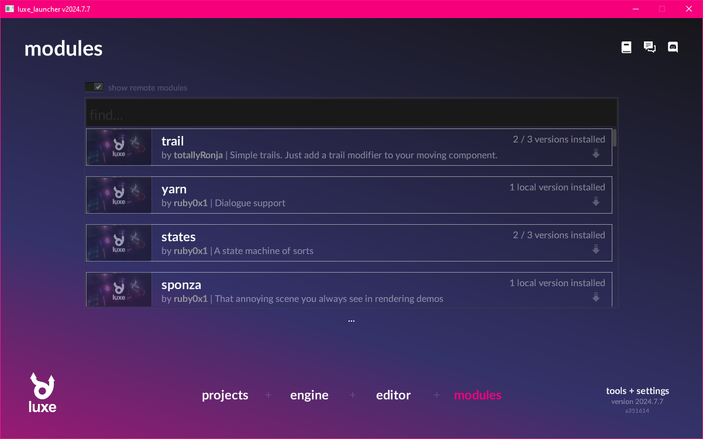
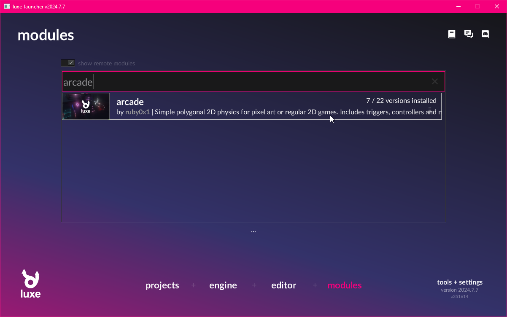
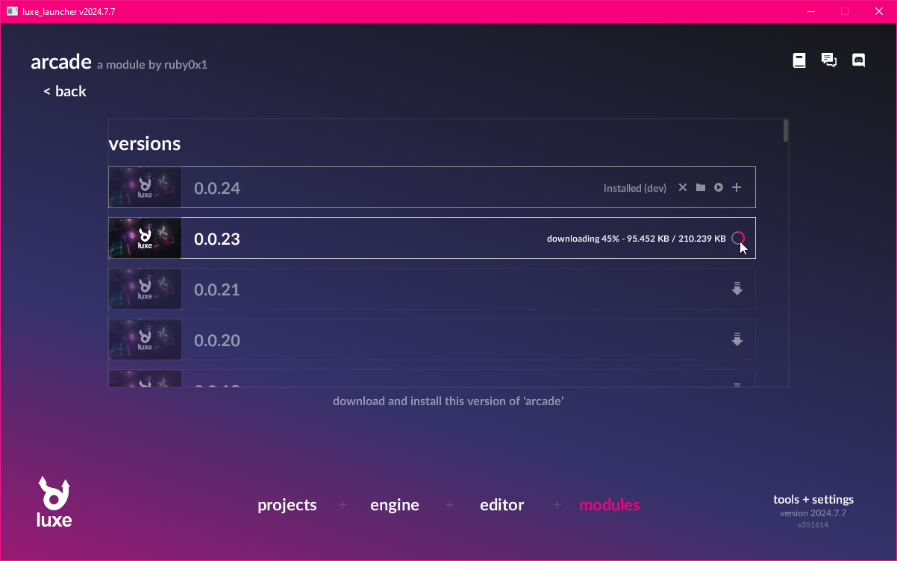
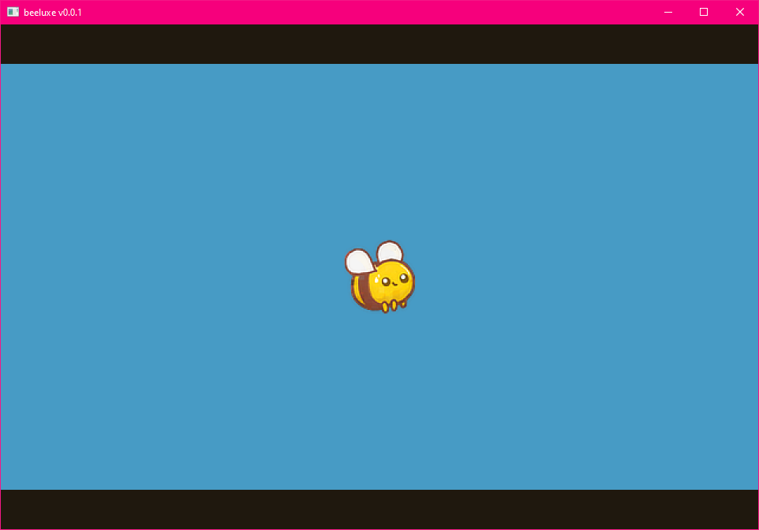
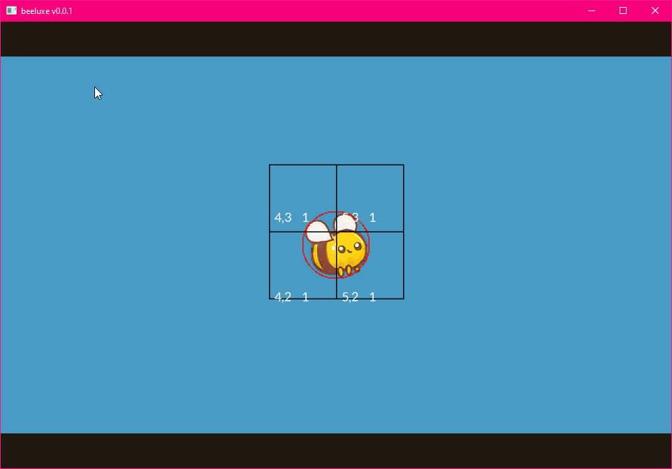
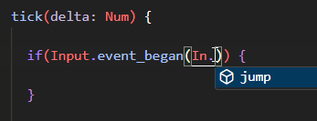
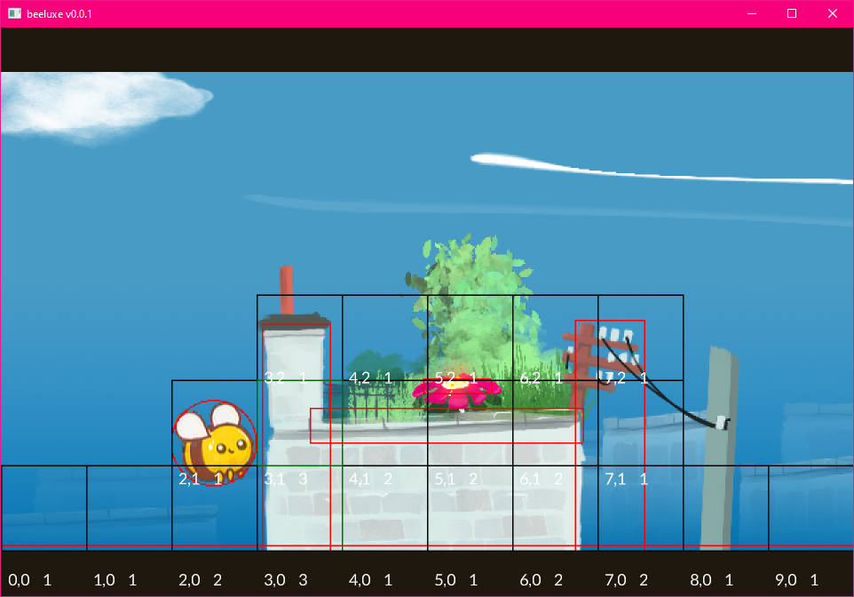
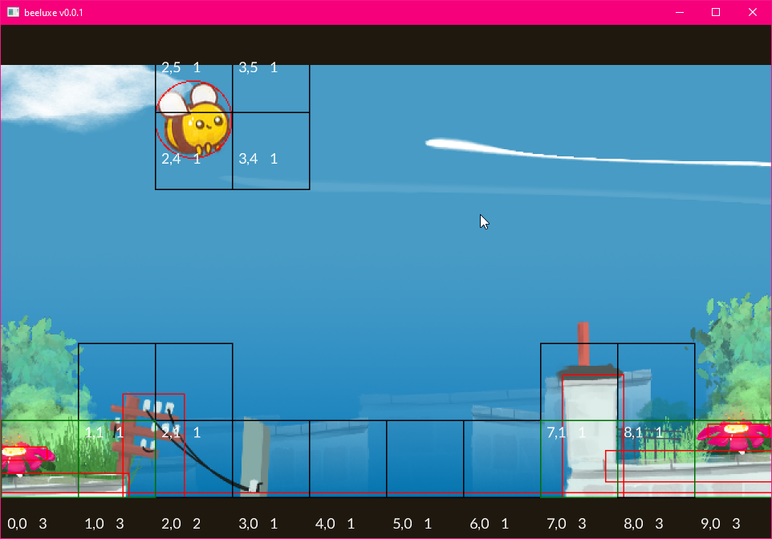

The luxe world¶
An introduction to working with the luxe world APIs.
outcome
In this tutorial we'll use the World api to put something on screen.
We'll also use a module, called Arcade for handling physics + collision.
We'll load scenes and create prototype instances to populate a world,
and create a custom Modifier.
We'll make a game where you play as a bee, and have to bounce on flowers.
Play it¶
Click first, then press Left Button, Up, W, X or Space to jump.
Press R key to reset.
Creating the project¶
For this tutorial, create a new project using the launcher, and when choosing an outline, select the tutorial project outline. This project is pre-configured so we can dive right in.
Create a new project from the tutorial project outline
Installing a module¶
In order to run our project, we first need to install a module. If you don't, you'll get errors!
You can use the launcher to install modules. Head over to the module page, and search for the arcade module. Once you find it, you can click through, and click the download arrow.
The project is configured to use version 0.0.24, install that version.
Install arcade version 0.0.24 to continue!
  
Using the module in a project¶
If you look inside of the luxe.project/modules.lx file you'll find the luxe and arcade modules referenced by version.
You can use the launcher to add a module to the project using the + icon, or you can manually add it to this file.
In this case, it's already there from the outline, so let's move on!
The Transform API¶
In the Draw tutorial, we drew a circle in the center of the screen using an immediate style API.
With the world system, we can create things in the world that will continue to draw as long as they're alive. An Entity in the world can also have modifiers attached that perform logic, and run gameplay code.
We saw this in the original empty project template, right before deleting it!
To create an entity, we do Entity.create(world) - this gives us a blank entity, and is ready to be modified to give it meaning.
The first thing we'll do, is attach a Transform modifier. Modifiers use the same create pattern,
and some modifiers add create methods with convenience arguments, like we'll see below from Sprite.create.
Let's create a new player variable in our game, and then inside ready we'll create an entity, attach a transform and a sprite to it.
world_width/world_height ?
Since our tutorial outline is based on the pixel outline, we have a fixed world size that will auto scale. This size is set in outline/settings.settings.lx and the size of the world is available in world_width and world_height. This is different from width/height, which is the window size.
add the highlighted code to ready
class Game is Ready {
var random = Random.new()
var draw: Draw = null
var player = Entity.none
construct ready() {
super("ready! %(width) x %(height) @ %(scale)x")
draw = Draw.create(World.render_set(world))
player = Entity.create(world, "player")
Transform.create(player, world_width/2, world_height/2)
Sprite.create(player, Assets.image("image/bee"), 64, 64)
} //ready
And just like that, we have our player in the middle of the screen.

Arcade physics¶
The arcade module provides collision + physics for a wide range of games, and comes with a bunch of ready to use tools.
The first important one is the Arcade modifier, which gives an entity a collider shape, and allows you to choose flags like whether it's solid or a trigger, what shape it is, change the velocity and more. It also gives us a callback for when we collide with something, so we can implement a response to overlapping or colliding with something.
Arcade import¶
We're gonna use the Arcade modifier from the arcade module to make our bee interact with the world. We'll import that module into the top of our game.wren code like this:
import "arcade: system/arcade.modifier" for Arcade, CollisionEvent, ShapeType
You'll see the arcade prefix on the import, this should be familiar because luxe is also a module, and we've seen the luxe: color import before. Imports without a prefix are project local.
Attach an arcade modifier¶
Much like a Transform or Sprite, we can attach Arcade to an entity using the same create pattern.
Let's tidy up and make a create_player() function, and move our player code into it.
add the highlighted changes
construct ready() {
super("ready! %(width) x %(height) @ %(scale)x")
draw = Draw.create(World.render_set(world))
create_player()
} //ready
create_player() {
player = Entity.create(world, "player")
Transform.create(player, world_width/2, world_height/2)
Sprite.create(player, Assets.image("image/bee"), 64, 64)
Arcade.create(player)
Arcade.set_shape_type(player, ShapeType.circle)
Arcade.set_radius(player, 32)
}
If we run this, it will look identical to before! That's because there's no gravity or anything on our entity.
So how do we know it's working? How do we know the radius matches? We can ask Arcade to debug draw the physics state.
add the highlighted line to create_player
...
Arcade.set_radius(player, 32)
Arcade.set_debug_draw_enabled(world, true)

Gravity is a constant acceleration, so we can use the Arcade.set_acc tool to add a downward acceleration.
The value is relative to your world size, and is game specific. For this game, we'll pick -200 as that feels good.
You can make it whatever you want!
add the highlighted line to create_player
...
Arcade.set_radius(player, 32)
Arcade.set_acc(player, [0, -200])
Arcade.set_debug_draw_enabled(world, true)
If you run this now, you should see the bee falling off the bottom of the world!
Loading a scene¶
Our outline includes a scene that has been created for us. This scene includes some background details, and a floor collider which will keep our bee on screen.
A scene is a kind of data based asset, a container for pre-configured entities with their modifiers already attached.
A particular scene can only be loaded once into the same world, but you can load multiple scenes into the same world. This makes them useful as a tool to layer or keep things loaded in the world, and much more. Scenes are typically what you would use for stuff like a Menu, or Level based games.
Scene assets
Scenes are typically created with the luxe editor, but they're simple data inside of a folder.
Take a look inside the scene/level.scene/ folder, and look inside any .entity.lx file!
With Scene.create we can load a scene from an asset. We'll use the Asset.scene(id) to grab the asset handle of the scene.
Work In Progress Asset API
The Scene API is available via import "luxe: world/scene" for Scene and is imported already.
Some assets, like the image above, use the older Assets.image(id) API (plural), while the scene and newer assets use Asset.scene(id) API (singular). The reason both exist is because we're moving to the new system and some assets aren't done moving yet.
Just before we create our player, we'll load our level scene into the world.
Add the highlighted line in ready
construct ready() {
super("ready! %(width) x %(height) @ %(scale)x")
draw = Draw.create(World.render_set(world))
Scene.create(world, Asset.scene("scene/level"))
create_player()
} //ready
With that, we'll see the clouds, some buildings, a gradient and we'll see the floor collider. The bee will bounce off the floor, and we're ready for the next step.
Named input events¶
In the first tutorial, we used Input.key_state_released to directly query a key.
This is great for quick prototypes but doesn't allow multiple keys, gamepads, or mouse inputs easily.
For that we'll need to use named input events. A named input event is what it sounds like, a name assigned to one or more inputs!
We have a few of these already defined by our project, if you look inside of outline/inputs.input.lx you'll see this:
jump = {
keys = ["key_x", "up", "key_w", "space"]
mouse = ["left"]
gamepad = [0]
}
If we query this instead of the individual key, any of those inputs will trigger the event. Since these are named events we refer to them by a string value, "jump", but using strings all over our project can lead to code that can be difficult to change.
Instead, what we'll do is make an enum-like class that makes our code easier to use, and gives us code completion and errors if we spell it wrong. The pattern is a static function that returns a string, so we'll make one called In and a method called jump, so we can use In.jump to refer to the event name.

class In {
static jump { "jump" }
}
class Game is Ready {
...
Implementing jump¶
Now inside the tick method, we'll add a jump method to make the bee jump. To do that, we'll get the current bee velocity, add some to it, and then set it back. We'll also set the x velocity to 0, because we never want the bee to move horizontally.
jump() {
var velocity = Arcade.get_vel(player)
velocity.x = 0
velocity.y = velocity.y + 150
Arcade.set_vel(player, velocity)
} //jump
tick(delta: Num) {
if(Input.event_began(In.jump)) {
jump()
}
...
Now when we run the game and press Up, W, X or Space the bee will jump upward.
Player position and speed¶
The bee jump is a little easy to go off screen, so we'll make a minor change to create_player() to give them a max speed, and we'll also enforce that the bee is always in the same position on screen, about a quarter of the way in.
create_player() {
...
Arcade.set_acc(player, [0, -200])
Arcade.set_max_speed(player, 150)
Arcade.set_debug_draw_enabled(world, true)
}
Inside tick, we'll set the player position to world_width / 4 every frame.
tick(delta: Num) {
Transform.set_pos_x(player, world_width / 4)
...
Now when we play, we have a couple jumps before we leave the screen, and our bee is in a nice place for the game.
Create a Prototype instance¶
Prototypes are similar to a Scene, they are pre-configured entities with their modifiers ready to create.
Prototype vs Scene
Prototypes are not limited to one per world like scenes. You can create an instance as many times as you need.
They can be created dynamically like we will below, and they can be placed inside a scene, and inside of other prototypes. Each instance can have the values from the prototype overridden when placed that way.
Our project includes a pillar ready to go as prototype/pillar.0 (we'll make more with the luxe editor in the next tutorial).
We'll create a create_pillar function, and we'll call it right after creating the player.
To create a prototype we use Prototype.create and Asset.prototype similarly. This returns a prototype root entity, which allows us to move the whole instance as a single unit.
...
create_player()
create_pillar()
} //ready
create_pillar() {
var pillar = Prototype.create(world, Asset.prototype("prototype/pillar.0"))
Transform.set_scale(pillar, 0.4, 0.4)
Transform.set_pos(pillar, world_width / 2, random.int(15, 170))
} //create_pillar
With that, you should see a pillar spawned in the center of the world.

Creating a custom modifier¶
The next step is to move the pillars across the screen, so the player will have to jump over them.
There's a more detailed guide on custom modifiers here
To do that, we want to make a modifier that will move any pillar that it is attached to, and when the pillar moves off the left of the screen, clean itself up.
Create a folder called system/ in the project
The convention for modifiers is to be in a folder called system/, they are a wren file with a modifier subtype extension. We're gonna make a modifier called pillar and copy paste the code below into it.
Create an empty file called system/pillar.modifier.wren in the project
import "system/pillar.modifier.api" for API, Modifier, APIGet, APISet
import "luxe: world" for Entity, Transform
import "luxe: render" for Render, Geometry
import "luxe.project/asset" for Asset
import "luxe: assets" for Strings
import "luxe: game" for Frame
#block = data
class Data {
}
#api
#display = "Pillar"
#icon = "image/pillar.svg"
#desc = "**A moving pillar**. Moves the pillar horizontally toward the player, then removes itself when offscreen."
class Pillar is API {
}
#system
#phase(on, tick)
class System is Modifier {
init(world: World) {
Log.print("init `%(This)` in world `%(world)`")
}
attach(entity: Entity, pillar: Data) {
Log.print("attached to `%(Strings.get(Entity.get_name(entity)))` `%(entity)`")
}
detach(entity: Entity, pillar: Data) {
Log.print("detached from `%(Strings.get(Entity.get_name(entity)))` `%(entity)`")
}
tick(delta: Num) {
each {|entity: Entity, pillar: Data|
}
}
}
Attach the modifier¶
Now that we have a modifier, we can attach it in the same way that we do for the built in ones.
We'll also modify our start position for the pillar, by setting it to world_width + 128 instead.
import "system/pillar.modifier" for Pillar
...
create_pillar() {
var pillar = Prototype.create(world, Asset.prototype("prototype/pillar.0"))
Transform.set_scale(pillar, 0.4, 0.4)
Transform.set_pos(pillar, world_width + 128, random.int(15, 170))
Pillar.create(pillar)
} //create_pillar
When you run this, you'll also see the line in the log:
[system/pillar.modifier line 29] - attached to
prototype/pillar.042951770139
You also won't see the pillar! So let's make it move.
Moving the pillars¶
Inside our pillar.modifier.wren there's a Data class, which was empty at the time.
For our pillar to move, we'll need a speed value and we can store the speed value in this class. The data class is per entity data, and is a little bit special. The fields require a type definition, and often have extra tags to configure how the data works.
Add a speed variable like this with a default value of 100:
class Data {
var speed: Num = 100
}
Now we can use the tick method to move our pillar and destroy the pillar when it goes off screen.
Systems are one per world
A modifier system sees all entities that is attached to, rather than on an individual entity level. We can see this in the tick method, it has an each method which will hand us each entity and the data for that entity.
Inside the tick method of our modifier, we are handed the entity that we're attached to. This entity is the prototype root of our instance, because that's the entity we attached it to.
When the pillar goes off screen, we'll see this in the log:
[system/pillar.modifier line 34] - detached from
prototype/pillar.042951770139
The Frame.end {} runs a function at the end of the frame. This is a WIP requirement for this Entity.destroy
tick(delta: Num) {
each {|entity: Entity, pillar: Data|
var x_now = Transform.get_pos_x(entity) - pillar.speed * delta
Transform.set_pos_x(entity, x_now)
if(x_now < -256) {
Frame.end { Entity.destroy(entity) }
}
} //each
} //tick
More pillars¶
We probably want more than one pillar to come across the level, so we'll use a tool called World.schedule(world, time, fn). This calls a function every time seconds, but the important part is that it is affected by the world rate.
If we used Frame.schedule(time, fn) it would be global, and not world specific. With World.schedule we can pause by setting the world rate to 0.
...
create_player()
create_pillar()
World.schedule(world, 6, 9999) {
create_pillar()
}
} //ready
And with that change, we now get a constant stream of pillars to jump over! We have one more important thing to do to finish this tutorial.

Handling collision¶
Our last step for this game is handling what happens when you hit something.
If you saw the moving pillar video above, the player goes through the walls and keeps jumping forward because of our code to keep it in the same spot.
Instead what we'll do is check the direction of the hit, and if you hit a wall (sideways), pause the game world.
...
handle_collision()
} //ready
handle_collision() {
Arcade.add_collision_callback(player) {|entity_a, entity_b, state, normal, overlap_dist|
if(state != CollisionEvent.begin) return
var dot = Math.dot2D(normal, [0,1,0])
if(dot.abs < 0.8) {
World.set_rate(world, 0)
}
} //collision callback
} //handle_collision
You can see here we bounce off the top of things, but when we hit the side wall, we stop.
Polishing¶
The check is a little abrupt, and isn't very fun because it's super precise and you can fail easily.
To make the game a bit more fun, we'll add some squishy behaviour. When we hit a collider, we get the height and check the distance. If the distance is less than 32 (half the radius of our bee), we've just hit the edge of the collider with the bottom of the bee and we can ignore it.
Another tweak, we'll play a bounce animation when we hit a flower. This also uses the Tags modifier, which allows us to tag entities with specific tags and check for them. In this case, our flower entity inside the pillar prototype already has a tag.
handle_collision() {
Arcade.add_collision_callback(player) {|entity_a, entity_b, state, normal, overlap_dist|
if(state != CollisionEvent.begin) return
var dot = Math.dot2D(normal, [0,1,0])
var scale = Transform.get_scale_world(entity_b)
var height = Arcade.get_height(entity_b) * scale.y
var top = Transform.get_pos_y_world(entity_b) + (height * 0.5)
var dist = (top - (Transform.get_pos_y_world(player) - 32))
if(dot.abs < 0.8 && dist > 32) {
World.set_rate(world, 0)
}
if(Tags.has_tag(entity_b, "flower")) {
Anim.play(entity_b, "anim/bounce")
}
} //collision callback
} //handle_collision
Reset¶
One final task is to make it so you can reset the state so you can try again.
We'll add a reset() method, first we reset the player position, and unpause the world.
This is called from tick using a simple key check.
reset() {
Transform.set_pos(player, world_width/4, world_height/2, 0)
World.set_rate(world, 1)
}
tick(delta: Num) {
if(Input.key_state_released(Key.key_r)) {
reset()
}
...
Now, our pillars will still be there, so we'll need to clear them up. We could keep an array of pillars we create, and then clean them up like we did in the draw tutorial? The modifer system we created already knows about all of our pillars though!
We can add a public API to our pillar modifier, e.g Pillar.reset(world).
To do this, we'll add a method to the API class in our modifier. This method has access to a method called system_in, which gives us our system to call into.
class Pillar is API {
static reset(world: World) {
var system: System = system_in(world)
system.reset()
}
}
Now inside of our system, we can add the reset method. This method will simply loop through each pillar, and destroy it.
class System is Modifier {
...
reset() {
each {|entity: Entity, pillar: Data|
Frame.end { Entity.destroy(entity) }
}
}
And of course, don't forget to call it from our reset method:
reset() {
Pillar.reset(world)
Transform.set_pos(player, world_width/4, world_height/2, 0)
World.set_rate(world, 1)
}
Debug off¶
One more tweak, now that we know it is working: turn off the debug drawer!
// Arcade.set_debug_draw_enabled(world, true)
Try this¶
Add score
Add a score variable to the game class, add 1 to it each time a flower is collected.
Add Game Over and a Win condition
Like before, make the experience more complete.
Experiment with values
Try randomizing pillar speeds, pillar schedule timing, bee velocities and more.
Final code¶
game.wren¶
import "luxe: world" for World, Entity, Transform, Sprite, Tags, Anim
import "luxe: draw" for Draw, PathStyle
import "luxe: render" for Material
import "luxe: game" for Frame
import "luxe: input" for Input, Key
import "luxe: assets" for Assets, Strings
import "luxe: asset" for Asset
import "luxe: math" for Math
import "luxe: string" for Str
import "luxe: io" for IO
import "random" for Random
import "luxe: world/scene" for Scene
import "luxe: world/prototype" for Prototype
import "arcade: system/arcade.modifier" for Arcade, CollisionEvent, ShapeType
import "system/pillar.modifier" for Pillar
import "outline/ready" for Ready
class In {
static jump { "jump" }
}
class Game is Ready {
var random = Random.new()
var draw: Draw = null
var player = Entity.none
construct ready() {
super("ready! %(width) x %(height) @ %(scale)x")
draw = Draw.create(World.render_set(world))
Scene.create(world, Asset.scene("scene/level"))
create_player()
create_pillar()
World.schedule(world, 6, 9999) {
create_pillar()
}
handle_collision()
} //ready
handle_collision() {
Arcade.add_collision_callback(player) {|entity_a, entity_b, state, normal, overlap_dist|
if(state != CollisionEvent.begin) return
var dot = Math.dot2D(normal, [0,1,0])
var scale = Transform.get_scale_world(entity_b)
var height = Arcade.get_height(entity_b) * scale.y
var top = Transform.get_pos_y_world(entity_b) + (height * 0.5)
var dist = (top - (Transform.get_pos_y_world(player) - 32))
if(dot.abs < 0.8 && dist > 32) {
World.set_rate(world, 0)
}
if(Tags.has_tag(entity_b, "flower")) {
Anim.play(entity_b, "anim/bounce")
}
} //collision callback
} //handle_collision
create_player() {
player = Entity.create(world, "player")
Transform.create(player, world_width/2, world_height/2)
Sprite.create(player, Assets.image("image/bee"), 64, 64)
Arcade.create(player)
Arcade.set_shape_type(player, ShapeType.circle)
Arcade.set_radius(player, 32)
Arcade.set_acc(player, [0, -200])
Arcade.set_max_speed(player, 150)
// Arcade.set_debug_draw_enabled(world, true)
} //create_player
create_pillar() {
var pillar = Prototype.create(world, Asset.prototype("prototype/pillar.0"))
Transform.set_scale(pillar, 0.4, 0.4)
Transform.set_pos(pillar, world_width + 128, random.int(15, 170))
Pillar.create(pillar)
} //create_pillar
jump() {
var velocity = Arcade.get_vel(player)
velocity.x = 0
velocity.y = velocity.y + 150
Arcade.set_vel(player, velocity)
} //jump
reset() {
Pillar.reset(world)
Transform.set_pos(player, world_width/4, world_height/2, 0)
World.set_rate(world, 1)
}
tick(delta: Num) {
if(Input.key_state_released(Key.key_r)) {
reset()
}
Transform.set_pos_x(player, world_width / 4)
if(Input.event_began(In.jump)) {
jump()
}
if(Input.key_state_released(Key.escape)) {
IO.shutdown()
}
} //tick
} //Game
system/pillar.modifier.wren¶
import "system/pillar.modifier.api" for API, Modifier, APIGet, APISet
import "luxe: world" for Entity, Transform
import "luxe: render" for Render, Geometry
import "luxe.project/asset" for Asset
import "luxe: assets" for Strings
import "luxe: game" for Frame
#block = data
class Data {
var speed: Num = 100
}
#api
#icon = "image/pillar.svg"
#display = "Pillar"
#desc = "**A moving pillar**. Moves the pillar horizontally toward the player, then removes itself when offscreen."
class Pillar is API {
static reset(world: World) {
var system: System = system_in(world)
system.reset()
}
}
#system
#phase(on, tick)
class System is Modifier {
init(world: World) {
Log.print("init `%(This)` in world `%(world)`")
}
attach(entity: Entity, pillar: Data) {
Log.print("attached to `%(Strings.get(Entity.get_name(entity)))` `%(entity)`")
}
detach(entity: Entity, pillar: Data) {
Log.print("detached from `%(Strings.get(Entity.get_name(entity)))` `%(entity)`")
}
reset() {
each {|entity: Entity, pillar: Data|
Frame.end { Entity.destroy(entity) }
}
}
tick(delta: Num) {
each {|entity: Entity, pillar: Data|
var x_now = Transform.get_pos_x(entity) - pillar.speed * delta
Transform.set_pos_x(entity, x_now)
if(x_now < -256) {
Frame.end { Entity.destroy(entity) }
}
} //each
} //tick
}